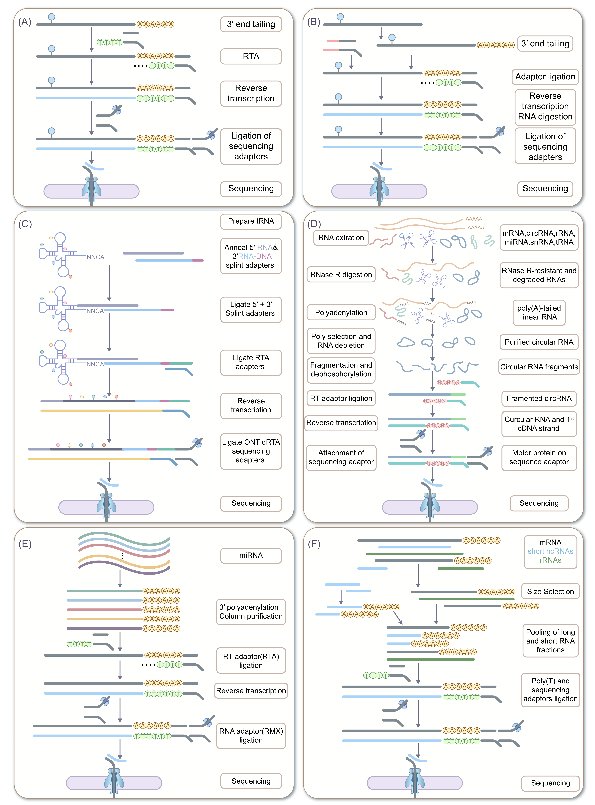

Design, standardization and optimization of DRS workflows
With its capability to sequence individual RNA molecules at single nucleotide resolution, DRS has emerged as a powerful platform for probing various RNA modification dynamics [26]. In practical applications, the scientific rigor of experimental design, the degree of refinement in protocol optimization, and the level of standardization in operation collectively determine the reliability of the resulting data, the accuracy of modification detection, and the comparability of findings across different studies. In this chapter, we systematically summarize key aspects of DRS experimental design, library preparation strategies, multi layer quality control schemes, and recent methodological advances, with the aim of providing a comprehensive and practice oriented reference for selecting and implementing DRS based technical routes.
Key considerations in experimental design: refined sample selection and RNA pretreatment
In DRS studies, experimental design should be closely aligned with the underlying biological question and optimized at the levels of sample handling and RNA pretreatment. Different RNA classes, such as mRNAs, tRNAs and circRNAs, exhibit pronounced differences in length distribution, structural complexity, modification profiles and in vivo abundance, which collectively constrain the choice of library preparation schemes and sequencing strategies. Accordingly, explicit sample inclusion criteria and RNA quality control metrics need to be defined on the basis of the molecular properties of the target RNA species, together with tailored enrichment or depletion steps, to secure high experimental success rates and robust data quality from the outset of the DRS workflow.
DRS library construction strategies for various RNA biotypes
Library construction is a pivotal step in DRS workflows, as it shapes RNA capture efficiency, full length read yield and the preservation of native RNA modifications. Different RNA biotypes vary substantially in length distribution, structural complexity, terminal modification patterns and abundance, necessitating tailored library preparation schemes to fully leverage DRS. In the following sections, we briefly summarize and compare library construction strategies for major RNA classes, including mRNAs, rRNAs, tRNAs, circRNAs, miRNAs and other non poly(A) RNAs.
{kind=link}

Figure 5. Advantages and biological applications of DRS. Schematic summary of the main strengths and use cases of nanopore DRS. TE: transposable element.
mRNA library
mRNA library preparation is one of the most established and widely used workflows in DRS, with its central steps focusing on poly(A) enrichment and stabilization of transcript structure (Figure 5A). Overall, the protocol should be implemented under stringent quality control to ensure data quality. The workflow starts with total RNA extraction followed by comprehensive quality assessment. Samples should be free of visible discoloration or particulate matter, with an A260/280 ratio maintained at approximately 1.9-2.2 and an A260/230 ratio ≥ 2.0. A minimum total RNA yield of 2 μg is typically required to support robust downstream DRS library preparation. A minimum RIN value of 8.0 is recommended to ensure adequate preservation of full length transcripts [26], [484]. After passing quality control, poly(A)+ mRNAs are selectively enriched using oligo(dT)-conjugated magnetic beads. The oligo(dT) oligonucleotides immobilized on the bead surface hybridize specifically to the 3′ poly(A) tails of mRNAs, allowing their separation from other RNA species. The enriched mRNAs are then ligated to a double stranded reverse transcription adapter (RTA) carrying a 3′ poly(T) overhang, which promotes specific annealing to the mRNA 3′ end and reduces nonspecific ligation events. Although RT is formally optional in DRS, it is recommended in most applications. Guided by the RTA, reverse transcriptase generates cDNA-RNA hybrid molecules. This step enhances template stability during downstream handling and mitigates RNA degradation during sequencing. At the same time, partial unfolding of higher order mRNA structures decreases conformational resistance during nanopore translocation, thereby improving the yield of long and full length reads. Subsequently, sequencing adapters (RLA) harboring a motor protein are ligated to the prepared molecules. The motor drives the RNA through the nanopore at an approximately constant speed, resulting in smoother and more reproducible ionic current signals, which is favorable for basecalling and modification detection. After bead based purification to remove unligated adapters and residual contaminants, the final library is mixed with sequencing buffer, loaded onto a flow cell, and sequenced on ONT platforms such as PromethION.
rRNA library
rRNAs are devoid of poly(A) tails and exhibit intricate higher order structures together with a high density of chemical modifications, features that collectively complicate library construction and often render them incompatible with conventional sequencing workflows (Figure 5B). Total RNA is first extracted and subjected to quality assessment, with a RIN ≥ 8.5 generally recommended to preserve native rRNA modification sites and secondary/tertiary structures, thereby reducing the accuracy drop caused by degradation in modification calling. As rRNA typically accounts for 80-90% of total RNA, additional enrichment is not required. For non-polyadenylated rRNAs, two representative approaches are commonly employed. One is in vitro polyadenylation, by adding poly(A) tails to the 3′ ends of rRNAs so that they can be processed with conventional mRNA library adapters. The other is to design customized RTAs complementary to rRNA 3′ termini, enabling specific recognition and ligation without polyadenylation [26], [324]. Given the highly structured nature of rRNA, enhanced structural unfolding is essential during library construction. In addition to generating cDNA-RNA hybrids by RT, additives such as betaine can be included to improve the ability of reverse transcriptase to traverse structured regions and to increase the efficiency of full length rRNA synthesis.
Subsequent adapter ligation and purification steps are broadly similar to those of mRNA libraries, but sequencing parameters may need to be tuned to accommodate the long length of rRNAs (for example, 28S rRNA spans several kilobases). Optimizing nanopore signal acquisition for long molecules helps to ensure complete read through. rRNA DRS libraries prepared in this way have been successfully used to profile diverse modifications in bacterial and eukaryotic rRNAs, such as m⁷G and Ψ in E. coli rRNA, and to characterize dynamic changes in rRNA modification patterns under stress conditions [324], [328].
tRNA library
tRNAs are short (approximately 70-90 nt), highly structured RNAs with dense stem-loop elements and an unusually rich modification landscape, without a polyA tail (on average ~13 modifications per molecule). These features pose specific challenges for DRS library preparation, particularly in short fragment enrichment, structural unfolding and adapter design (Figure 5C) [26]. In practice, relatively large input amounts (e.g., ≥ 10 μg total RNA) are often required to compensate for multistep losses, and RNA integrity is usually kept at RIN ≥ 8.5 to preserve tRNA structure and modification patterns [192].
Short RNA fragments can be enriched from total RNA using silica based purification systems that preferentially retain RNAs up to about 200 nt, thereby generating a fraction enriched in tRNAs [36]. The tRNA enriched fraction is then deacylated, for example by incubation in 0.1 M Tris-HCl (pH 9.0) at 37 °C for 30 min, to remove aminoacyl groups from the 3′ ends that would otherwise interfere with adapter ligation. After neutralization with an acidic buffer and cleanup, deacylation efficiencies of ≥ 95% are typically achieved [192]. Exploiting the conserved NCCA motif at tRNA 3′ termini, a double stranded RNA adapter with defined overhangs can be designed: the 3′ end carries an approximately 10 nt poly(A) overhang to provide a binding site for subsequent RTA, whereas the 3′ end presents a UGGN overhang complementary to the NCCA sequence. Following design, this adapter is ligated to the tRNAs. Extending the ligation reaction to roughly 16 h and supplementing the mixture with an RNA helicase (e.g., Rha) to relax local stem-loop structures increases the ligation efficiency from about 60% to over 85% [36]. The resulting RNA molecules are then ligated to a double stranded RTA carrying a 3′ poly(T) overhang. RT is then carried out to generate cDNA-RNA hybrids; osmolytes such as high concentration betaine are often added to facilitate traversal of structured regions by the reverse transcriptase, thereby improving the success of full length synthesis and increasing the proportion of full length reads by approximately 40% [192], [485], [486].
Subsequent ligation of motor containing sequencing adapters and bead based purification largely follow standard DRS workflows. However, run and basecalling settings must be adapted to the short length of tRNAs; for instance, adapter detection thresholds in MinKNOW may need adjustment to avoid misclassifying genuine tRNA reads as adapter dimers or contaminants. With appropriate optimization, the effective output of tRNA libraries can approach that of mRNA libraries [36]. Such workflows have been successfully applied to tRNA modification profiling in yeast, Escherichia coli and human cells; for example, Nano tRNAseq uses a related strategy to detect loss of the Ψ55 modification in Pus4 deficient strains [487].
circRNA library
circRNA lack free 5′ and 3′ ends, occur at relatively low abundance, and are easily masked by linear transcripts. Consequently, DRS library preparation for circRNAs critically depends on specific enrichment and adapter ligation strategies tailored to their circular topology (Figure 5D). Total RNA is first extracted and quality checked, with an input amount of ≥ 5 μg generally recommended to ensure adequate capture of low abundance circRNAs and overall RNA integrity.
To deplete linear RNAs, RNase R is commonly employed, taking advantage of its selective degradation of linear transcripts from their 3′ ends, while circRNAs, lacking free termini, are largely resistant and thus become enriched in the remaining fraction [488], [489], [490]. Following initial RNase R treatment, a secondary depletion step is recommended to eliminate any remaining linear RNAs, ensuring high-purity circRNA enrichment. The purified circRNAs are then subjected to controlled fragmentation to generate linear molecules of optimal length for sequencing. These linearized fragments possess accessible ends. A double-stranded RNA adapter is ligated to the 3′ end of each fragment using T4 RNA ligase. Using the ligated adapter as a primer-binding site, standard RT is performed to generate a cDNA-RNA hybrid for each fragment, thereby converting the circular topology into a sequenceable linear format.
Subsequent ligation of sequencing adapters, purification, and nanopore sequencing follow standard DRS protocols. However, basecalling and mapping require adjustments to accurately identify back‑splice junctions from circular templates.This workflow has been effectively used for profiling m⁶A modifications on plant circRNAs, demonstrating the utility of DRS for studying epitranscriptomic modifications in circular RNAs [488].
miRNA library
miRNAs are the shortest known non coding RNAs (approximately 18-22 nt) and occur at very low abundance, which creates two major obstacles for library construction: basecaller by default discards reads < 50 nt, leading to substantial loss of miRNA signals, and the low copy number of miRNAs requires highly efficient enrichment to achieve adequate depth (Figure 5E) [491]. The workflow therefore begins with high quality RNA extraction and stringent QC, requiring RNA purity of A260/280 1.9-2.2 and A260/230 ≥ 2.0, a total input of ≥ 5 μg, and assessment of miRNA size distribution to exclude heavily degraded samples. A two step enrichment strategy is then applied. First, RNAs ≤ 200 nt are selected to deplete long transcripts and enrich the small RNA fraction. Second, biotinylated probes complementary to conserved regions of target miRNA families are used for hybridization, followed by streptavidin bead capture, which can increase the miRNA fraction from < 0.1% in small RNA fraction to > 50% in the enriched pool. To accommodate the very short inserts, customized single end adapters are employed: the 5′ end carries a barcode for multiplexing, and the 3′ end contains a short sequence complementary to the miRNA 3′ terminus, thereby reducing adapter dimer formation and nonspecific ligation. Ligation reactions are typically extended to 12-16 h and supplemented with ligase enhancers, yielding ligation efficiencies above 70%. A critical step is the reconfiguration of basecaller thresholds for adapter detection and minimal read length, lowering the retention cutoff to around 15 nt to prevent miRNA reads from being discarded as artifacts. Optional RT to generate cDNA-RNA hybrids can be introduced, particularly for degraded or clinical samples, to stabilize miRNA derived molecules. After ligation of motor containing sequencing adapters and bead cleanup, libraries are sequenced on MinION/GridION/PromethION instruments. Downstream, miRNA-oriented mapping and quantification pipelines are used, taking into account the short length and high sequence similarity of miRNAs and, where appropriate, incorporating secondary structure information to better distinguish homologous family members.
Non-poly(A) RNA library
Non-poly(A) RNAs are transcripts that lack a 3′ poly(A) tail, encompassing lncRNAs, snRNAs, snoRNAs, histone mRNAs, subsets of viral RNAs, and abundant structural RNAs such as rRNAs and tRNAs. Library preparation for this RNA class must be independent of poly(A)-based capture to enable efficient enrichment and full length sequencing of the intended targets. Guided by non poly(A) oriented protocols such as NERD seq (Figure 5F) [194], the workflow is optimized for non poly(A) transcripts. Total RNA is first extracted and quality checked, with an RIN ≥ 8.0 and an input amount ≥ 3 μg. rRNAs are then depleted using biotinylated probes targeting conserved regions, followed by removal of probe-rRNA complexes with streptavidin coated magnetic beads, typically achieving ≥ 95% rRNA depletion while minimizing mechanical fragmentation of non poly(A) species. Adapter ligation is carried out with a generic single stranded RNA adapter. The adapter bears a 5′ phosphate group, allowing RNA ligase-mediated covalent joining to 3′ hydroxyl termini of non poly(A) RNAs without the need for a pre-existing poly(A) tail. The RNA products generated in the previous step are subsequently joined to a double stranded RTA adapter bearing a 3′ poly(T) overhang. RT is then carried out to generate cDNA-RNA hybrids, Subsequent ligation of sequencing adapters and purification steps follow standard DRS procedures. This strategy is applicable to bacterial transcripts and to viral RNA that lack poly(A) tails [300].
Post processing and sequencing optimization of library preparation
A standardized and reliable DRS workflow requires fine grained optimization and multidimensional quality control across post library processing, sequencing parameter tuning, and data analysis calibration, under a unified end to end QC framework. Library purification is a key optimization step. For conventional mRNA and rRNA libraries, one step magnetic bead cleanup is employed: the first round removes unligated adapters, small molecule contaminants and free nucleotides [36]. For specialized libraries such as tRNA and circRNA, dedicated purification strategies are required, whereas circRNA libraries require an additional step to eliminate residual linear RNAs remaining after RNase R digestion. The sequencing reaction mix is prepared strictly according to the manufacturer’s instructions, adjusting the effective RNA library concentration to 100-200 pM to ensure optimal nanopore occupancy, and flow cell pore activity is checked prior to loading to avoid blockage induced loss of yield. Sequencing parameters are then tuned according to RNA type: for mRNA libraries, a minimum mean read length threshold of ≥ 200 nt is applied; for tRNA libraries, dedicated basecalling models or modes tailored for short reads may be required to achieve accurate basecalling; for rRNA libraries, For rRNA libraries, higher-order rRNA structures need to be disrupted during RT to ensure efficient copying of long rRNA molecules [9], [36]. The adoption of SQK-RNA004 chemistry markedly increases throughput and accuracy: compared with earlier kits, RNA004 improves per‑read accuracy and reduces mismatch and insertion errors, and ONT internal benchmarking further reports a ~2.5‑fold increase in throughput and an increase in median read accuracy from ~93% to ~98.7% when using optimized basecalling models, thereby providing higher‑quality raw signals for RNA modification detection [61], [492].